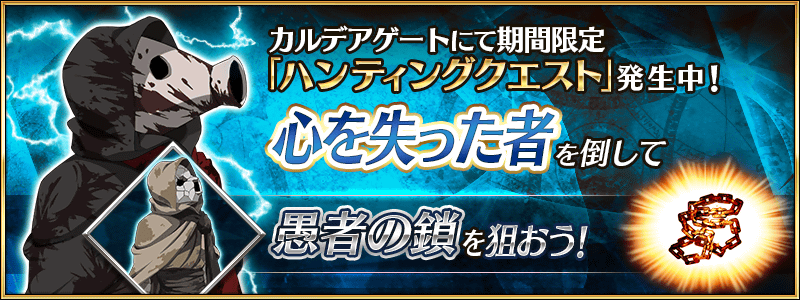
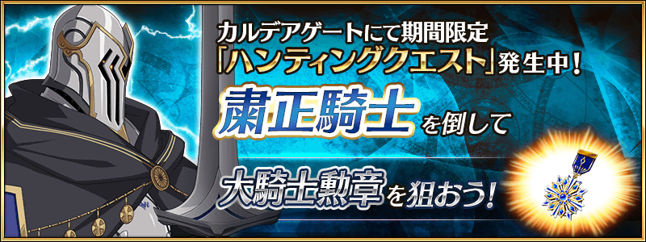
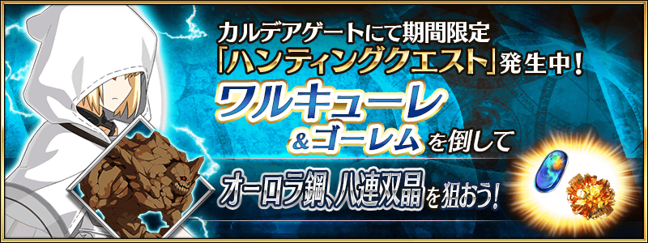
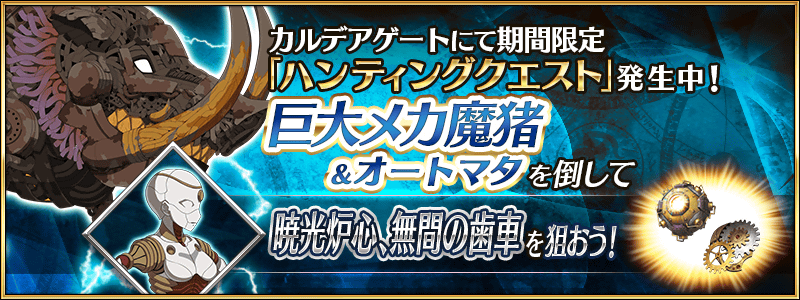
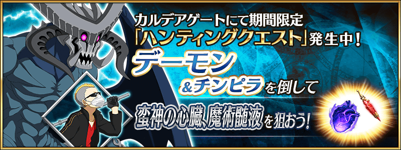
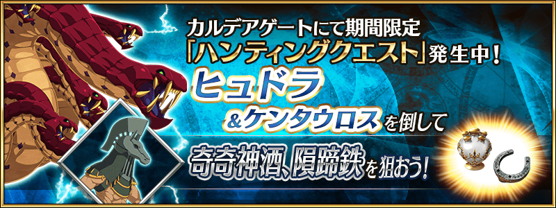

舉辦容易取得特定技能強化＆靈基再臨素材的關卡「狩獵關卡」！
舉辦期間中，特定敵人做為對象的狩獵關卡會依序在迦勒底之門出現。
在狩獵關卡，有準備包含從上次登場的最上位關卡「典位+級」共4階段難易度，在各自的期間內皆能無數次挑戰。
>
另外，在初次通過時可獲得魔力稜鏡做為關卡通過報酬。
挑戰關卡以獲得技能強化＆靈基再臨素材做為目標吧！
◆舉辦期間◆
2020年10月2日(五) 17:00～10月9日(五) 11:59
◆參加條件◆
所有的御主對象
※新御主玩家必須推進至通過「特異點F 炎上汙染都市 冬木 第3節」。
10月2日(五) 17:00～10月3日(六) 17:59

10月3日(六) 17:00～10月4日(日) 17:59

10月4日(日) 17:00～10月5日(一) 17:59

10月5日(一) 17:00～10月6日(二) 17:59

10月6日(二) 17:00～10月7日(三) 17:59

10月7日(三) 17:00～10月9日(五) 11:59


「★5(SSR)沖田總司(Saber)」的戰鬥動作及寶具演出翻新！
在「Fate/Grand Order」官方網站內的公告中，以影片公開寶具演出，敬請確認。
◆翻新實施時間◆
2020年10月2日(五) 17:00～


強化「★5(SSR)沖田總司(Saber)」「★5(SSR)土方歲三」的特別關卡「從者強化關卡」，在迦勒底之門永久追加。
不僅進行對象從者的強化，也可獲得聖晶石做為關卡通過報酬。
※請注意在從者強化關卡沒有文字冒險部份。
◆追加時間◆
2020年10月2日(五) 17:00～
◆開放條件◆
持有的強化對象從者，必須使其span class="notice">最終再臨。
※未持有對象從者的話，不會出現關卡。
※關卡沒有舉辦期限。


其他還有，期間限定「GUDAGUDAPick Up召喚(每日交替)」同時舉辦！
關於詳情，請自下述橫幅確認。
■「GUDAGUDAPick Up召喚(每日交替)」詳細情報